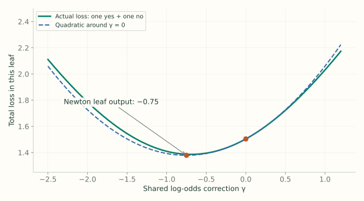

4. Classification: The Derivation
Notes on StatQuest with Josh Starmer · Gradient Boost Part 4 · 37:00 video. Explanations and redrawn figures follow the lecture’s worked example.
This lecture derives the classification steps from binary log loss, including the leaf formula used in Lecture 3. Keep three quantities separate: the observed label $y$, the additive score $F$, and the probability $p=\operatorname{sigmoid}(F)$.
1. Derive the starting score $F_0$ (and why we use log-odds $F$)
Video 2:00 ↗If $y_i=1$, the model assigns probability $p$ to the observed outcome; if $y_i=0$, it assigns $1-p$. Taking the negative log gives binary cross-entropy (log loss) for one row:
Before building any trees, find the single constant probability $p$ that minimizes total loss across all $n$ rows. Differentiate $\sum_{i=1}^n L(y_i, p)$ with respect to $p$ (using $\frac{d}{dp}\log p = \frac{1}{p}$ and $\frac{d}{dp}\log(1-p) = \frac{-1}{1-p}$) and set to zero:
Why do we take the log of $\frac{p}{1-p}$ and work in log-odds $F$ instead of updating $p$ directly? Look at a single row’s derivative with respect to $p$ over the common denominator $p(1-p)$:
To cancel that $p(1-p)$ in the denominator so the gradient is simply $-(y - p)$, we parameterize $p$ by a score $F$ whose derivative is $\frac{dp}{dF} = p(1 - p)$:
Separating variables in $\frac{dp}{dF} = p(1 - p)$ and integrating shows that $F$ must be the log-odds:
Therefore, for the lecture’s three training rows $y = [1, 1, 0]$ ($2$ ones and $1$ zero, so $p_0 = 2/3$), the optimal starting log-odds score is:
2. Rewrite the classification loss in terms of $F$
Video 4:00 ↗First, invert $F = \log\!\left(\frac{p}{1-p}\right)$ to express $p$ and $1-p$ in terms of $F$:
Taking the log of $1 - p$ using $\log(a/b) = \log a - \log b$ and $\log(1) = 0$ gives:
Now expand $(1-y)\log(1-p)$ inside $L(y,p)$ step by step and substitute $F$ and $\log(1-p)$:

3. Differentiate: the negative gradient is y − p
Video 9:18 ↗Just as in regression, differentiating the total loss with respect to row $i$’s individual log-odds score $F(x_i)$ drops every other row $k \ne i$ from the sum. Apply the chain rule $\frac{d}{dF}\log(1+e^F) = \frac{1}{1+e^F}\cdot e^F$:
Negating that derivative gives the pseudo-residual:
This is the negative gradient with respect to the log-odds score $F$, even though its simplified formula is written in terms of the probability $p_i$.
4. Fit a tree to the pseudo-residuals
Video 14:09 ↗With $y = [1, 1, 0]$ and $p_0 = 2/3$ ($F_0 = \log 2 \approx 0.6931$), compute the initial residuals $y_i - p_0$. Splitting on “likes popcorn” sends row 1 to one leaf and rows 2 and 3 to the other:
| Row | Likes popcorn | Age | Color | Label | Initial residual |
|---|---|---|---|---|---|
| 1 | Yes | 12 | Blue | 1 | $1/3$ |
| 2 | No | 87 | Green | 1 | $1/3$ |
| 3 | No | 44 | Blue | 0 | $-2/3$ |
5. Derive the leaf correction
Video 16:43 ↗For one leaf $R$, the old scores $F_i$ are fixed. Adding a shared correction $\gamma$ to every row in that leaf gives total loss
Approximate this loss near $\gamma=0$ with a second-order Taylor polynomial:
Here $G$ is the sum of the rows’ first derivatives and $H$ is the sum of their second derivatives. Since $L'(y,F)=p-y$ and $y$ is fixed, apply the quotient rule to differentiate $p = \frac{e^F}{1+e^F}$:
Therefore $G=\sum_{i:x_i\in R}(p_i-y_i)$ and $H=\sum_{i:x_i\in R} p_i(1-p_i)$. Differentiate the quadratic with respect to the shared addition $\gamma$ and set to zero:
The numerator supplies the direction; the denominator scales the step by the loss’s curvature (one Newton step).

6. Calculate the two leaf outputs
Video 24:53 ↗Every row starts with $p=2/3$, so its curvature contribution is $p(1-p)=2/9$:

7. Update scores, then probabilities, then residuals
Video 31:36 ↗Each row’s updated log-odds score adds its leaf output $\gamma$ scaled by the learning rate $\nu=0.8$ to the starting score $F_0=\log 2$: $F_1(x_i)=F_0+\nu\gamma(x_i)$:
| Row | New score $F_1 = F_0 + \nu\gamma$ | Probability $p_1 = \operatorname{sigmoid}(F_1)$ | New residual $y-p_1$ |
|---|---|---|---|
| 1 | $\log2+0.8(1.5)\approx1.8931$ | 0.8691 | +0.1309 |
| 2 | $\log2+0.8(-0.75)\approx0.0931$ | 0.5233 | +0.4767 |
| 3 | $\log2+0.8(-0.75)\approx0.0931$ | 0.5233 | −0.5233 |
At round $m$, fit the next tree to the latest residuals, compute each leaf’s $\gamma_{jm}$ using the updated probabilities $p_i$, and add its scaled output to the previous score $F_{m-1}(x)$:
Here $F_{m-1}(x)$ is the previous log-odds score, $\nu$ is the learning rate, and the indicator $\mathbf1\{x\in R_{jm}\}$ is $1$ only for the single leaf $R_{jm}$ that $x$ lands in (and $0$ for the other $J_m - 1$ leaves), so the sum simply adds that one leaf’s log-odds correction $\gamma_{jm}$.